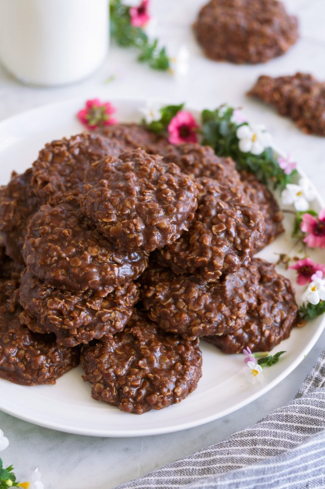

No Bake Cookies

No Bake Cookies are such a nostalgic childhood favorite! This recipe has that classic chocolate peanut butter flavor combo and the perfect chewy, fudgy texture. And I’m pretty sure they’re the easiest cookies on the planet to make!
Ingredients
- 1/2 cup (113g) salted butter
- 1 3/4 cups (350g) granulated sugar
- 1/3 cup (32g) unsweetened cocoa powder
- 1/2 cup (120ml) milk
- 1 tsp vanilla extract
- 2/3 cup (160g) creamy peanut butter
- 3 cups (275g) quick oats don't use old fashioned oats
Steps
- Line two baking sheets with parchment paper or set out approximately 29 cupcake liners.
- In a 2.5 to 3 quart medium saucepan combine butter, sugar, cocoa, and milk.
- Set over medium heat, and cook stirring frequently until it reaches a full boil. Allow mixture to boil 60 seconds without stirring.
- Remove from heat, immediately add in vanilla, peanut butter and quick oats.
- Stir mixture until well combined then, using a medium (2 Tbsp) cookie scoop or two spoons drop mixture onto lined baking sheets or into cupcake liners.
- Allow to rest at room temperature until set, about 20 - 30 minutes (to speed up setting refrigerate).
- Store cookies in an airtight container at room temperature.